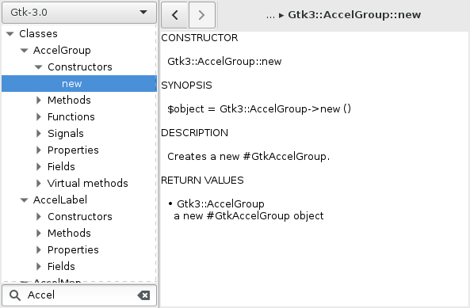

Perl basics
Standard modules
Testing
Testing in Perl uses a format called the Test Anything Protocol (or TAP). This is a simple text-based format that outputs test results in a standard way such that the results can be generated by different tools and even stored for later processing.
In order actually run these tests, you need to use the
prove test harness command.
Usually you want to run the test files under the t/ directory.
By default, test files are just Perl scripts that have the extension .t.
You can do that by running prove -lvr t/.
- The
t/part tellsprovewhere it to look for test files. - The
-loption adds the Perl modules under thelib/directory to the Perl search path (@INC). - The
-voption runs the tests in verbose mode to give extra information about each test. - The
-roption recursively loads test files for every directory given.
In order to actually write the tests, look over the documentation for Test::Most and Test::More. These contain functions for checking for expected conditions in the test code.
Release managment
In order to make releases, we use Dist::Zilla. This is a tool that can extended to do many maintenance tasks such as listing all the dependencies of the code or testing for spelling errors in documentation.
Documentation
Perl documentation is written in a format called POD. It has a simple syntax that can be converted to many other formats such as HTML or manpages. That syntax can be extended by using Pod::Weaver which acts as a preprocessor that can add additional directives to POD.
Devops
We use virtual machines to test the code under different environments. These virtual machines are configured by using Vagrant. See the devops repository for more information.
- Devel::REPL (TODO)
GTK
GTK+ is the cross-platform GUI toolkit that we use. Instead of writing the GUI code entirely by hand, much of layout is done interactively using the Glade designer.
GTK+ is a C library. Despite being written in C, it is written in an
object-oriented style by using the glib C library.
This has the advantage that bindings to a glib-based library can be easily
created for languages like Perl, by using something called the
GObject Introspection layer.
This is how the Perl bindings to GTK+ are also provided by providing access to that layer using the
Glib::Object::Introspection package as part of the
GTK-Perl project.
Learning GTK+
If you want to learn how to use Glade, see the Charter example at this repository https://github.com/zmughal/learning-gtk. The code is based off a tutorial written using C, but if you compare the Perl code to the C code, you can see that it is not that much different. This is because most of the GUI defintion is in the Glade XML file which can be shared by both the C version and the Perl version.
Gnome also hosts several tutorials on how to write GTK+ complete applications without using Glade, most of which are written in C: https://developer.gnome.org/gnome-devel-demos/stable/. One of those tutorials has been translated into Perl and is available here: https://github.com/MaxPerl/perl-Gtk3-Tutorial.
If you are trying to figure out how to use a specific widget and having trouble with the Perl syntax, you may want to look at the following examples that showcase individual widgets: - https://github.com/kevinphilp/Perl-gtk3-Tutorial - https://github.com/dave-theunsub/gtk3-perl-demos - https://github.com/Programmica/perl-gtk3-examples
GTK+ documentation
In order to see the documentation for Glib-based libraries (such as Gtk) in a Perl-friendly way,
the Glib::Object::Introspection
package comes with called perli11ndoc that shows all the available classes that can be used
for that library using Perl syntax.
|  |
{kind=link}
Debuggging GTK
Use GTK_DEBUG="interactive" (see https://developer.gnome.org/gtk3/stable/gtk-running.html).
Creating Perl bindings
There are five approaches to writing bindings for Perl:
Writing bindings in C code that links into the Perl interpreter and uses the Perl API.
- Rarely done.
- Full control of interpreter internals.
Writing bindings using a Perl-specific DSL called XS that gets converted to C code (static).
- The standard approach to writing bindings.
- Automatically generates C code that allows for setup of Perl API calls.
Writing bindings using Inline::C code that gets converted to XS then C (static).
- A simple way to automatically generate XS code without having to learn XS syntax.
Writing bindings using FFI::Platypus (
libffi-based) to call functions dynamically.- A modern approach that avoids having to write C.
Automatically generating XS bindings using SWIG.
- Common among very large libraries that need to create bindings for multiple languages at once.
Perl internals and XS
Adding native library bindings
- https://github.com/Perl-XS/notes/blob/master/Resources.md
- https://www.lemoda.net/xs/xs-intro/
- http://perldoc.perl.org/index-internals.html
Using Inline
Inline is a module that allows for creating interfaces to other languages including C, Python, and Java. It simplifies the binding process so that all that is often needed to create a binding is a snippet of code that is included within the Perl code that automatically gets wrapped when the Perl code is loaded.
In order to release code to other systems that do not have Inline installed,
there is Inline::Module which automatically
includes a copy of the Inline module code necessary to build the
Inline-based distribution.
- Inline::C https://metacpan.org/pod/Inline::C
Specific notes about third-party libraries
Developing on Windows
- TODO Under construction